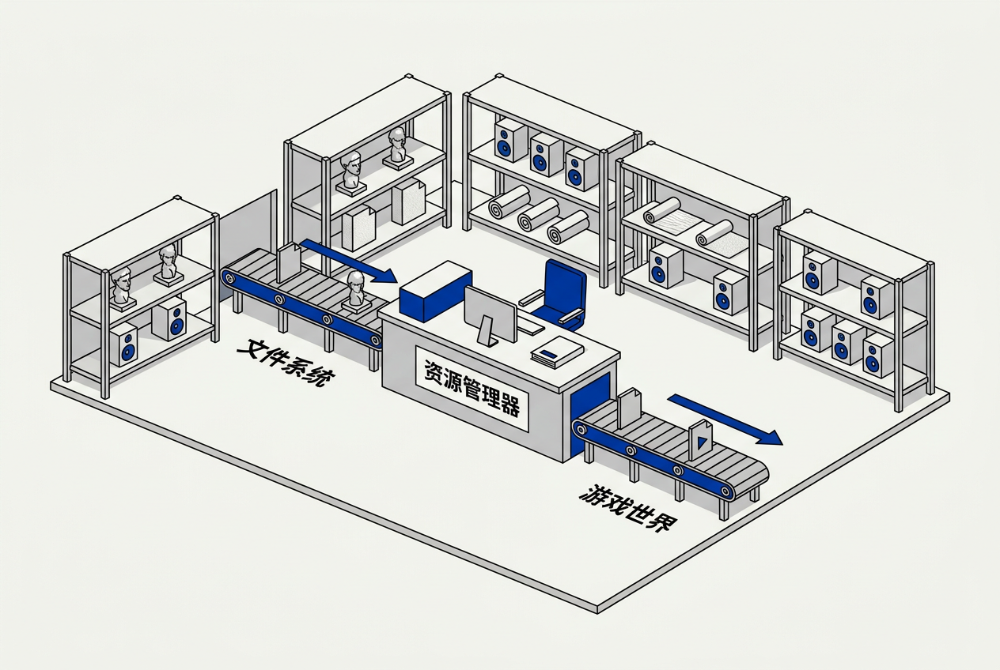

第7章：资源与文件系统 — 零基础讲义
讲义说明
本讲义基于 Jason Gregory 所著《Game Engine Architecture Volume I》第4版第7章（Resources and the File System, p.439-482），逐节翻译推导。
本版插画由 ImageGen + Guizang 材质插画标准流程生成。
学习目标
- 理解包文件（Pak/Package）的设计目的和结构
- 掌握异步 I/O 的基本原理
- 理解资源管理器的核心职责（加载、卸载、引用计数、依赖管理）
- 掌握流式加载在开放世界游戏中的实现策略
- 理解资源生命周期管理的设计权衡
7.1 文件系统

7.1.1 为什么不能用操作系统的文件系统？
7.1.1.1 OS 文件系统的三大局限
| 问题 | 影响 |
|---|---|
| 文件数量爆炸 | 游戏可能有数十万个独立文件——OS 打开/遍历目录极慢 |
| 磁盘寻道 | 每打开一个新文件 = 磁头移动到另一个位置（HDD 上 8-15ms！） |
| 跨平台差异 | Windows 反斜杠、Linux 正斜杠、PS5 完全不同 |
7.1.2 包文件（Package File）
7.1.2.1 核心思想：把一万个小文件打包成一个大文件
生活类比： 搬家时把零碎物品装进纸箱——搬运一个纸箱比搬运 100 个小物件高效得多。同样的，读取一个连续的 2GB 文件比读取 10000 个 200KB 的文件快数十倍。
7.1.2.2 包文件的结构
// 包文件（.pak）的内部结构
[文件头: "PAK1" 魔术数 + 版本号]
[文件内容: 连续存储的压缩/不压缩数据块]
[目录表: 文件名→偏移量+大小的哈希表——位于文件末尾，便于快速更新]
// 加载流程
1. 打开 .pak 文件
2. 读文件尾的目录表到内存
3. 需要 "textures/hero.png": 查哈希表 → 得到偏移量 → seek + 读取 → 返回7.1.3 异步 I/O
7.1.3.1 三个核心操作
// 异步 I/O 的三步模式
// ① 发起请求（立即返回）
IORequest req = FileSystem::ReadAsync("textures/hero.png", callback);
// ② 游戏继续运行，不被阻塞
GameLoop::Update(dt); // IO 在后台处理中...
// ③ 检查是否完成
if (req.IsReady()) {
Texture* tex = LoadFromMemory(req.GetData());
}7.1.3.2 为什么必须异步？
同步读取一个 32MB 的纹理 = 游戏画面冻结 50-100ms——完全不可接受。异步 I/O 在 IO 线程（或 OS 内核）中处理磁盘操作，主线程继续运行——玩家看到的加载动画是实时渲染的。
7.2 资源管理器
7.2.1 资源管理器的核心职责
7.2.1.1 四大核心功能
- 加载： 从包文件读取原始数据→解析→转换为 GPU/CPU 可用的格式
- 卸载： 释放不再需要的资源占用的内存（对内存紧缺的游戏机至关重要）
- 去重： 两个角色用了同一张纹理——只加载一次，返回同一个指针
- 依赖追踪： 材质依赖纹理和着色器——卸载材质时自动检查依赖
7.2.2 引用计数
7.2.2.1 AddRef / Release 模式
class Resource {
std::atomic<int> refCount = 0;
void AddRef() { refCount++; }
void Release() {
if (--refCount == 0) {
Unload(); // 没人引用了——真正卸载
}
}
};
// 使用示例
Texture* tex = ResourceManager::Load("hero.png"); // refCount = 1
Material* mat = CreateMaterial(tex); // refCount = 2 (材质也引用)
tex->Release(); // refCount = 1
mat->Release(); // refCount = 0 → 卸载7.2.3 依赖管理
7.2.3.1 依赖图
一个角色模型（FBX）可能依赖：骨骼动画数据、多张纹理（漫反射/法线/金属度/粗糙度）、材质、着色器、碰撞数据、物理材质。资源管理器需要知道这支"依赖树"。当卸载角色时，所有只被这个角色引用的子资源也一起卸载。
// knight.fbx 的依赖树
knight.fbx
├── skeleton.bone_data
├── knight_diffuse.png ← 只有 knight 在用
├── knight_normal.png ← 只有 knight 在用
├── steel_material.mtl
│ └── steel_shader.glsl ← 多个角色共用——不能卸载！
├── knight_physics.col
├── walk.anim
├── attack.anim
└── hit_reaction.anim
// 卸载 knight 时：
// ✅ 卸载 knight_diffuse.png (refCount=0)
// ❌ 不卸载 steel_shader.glsl (refCount=5，其他角色还在用)7.3 流式加载
7.3.1 开放世界的挑战
7.3.1.1 内存永远不够
// 开放世界资源规模估算
世界大小: 64 平方千米
每平方米纹理数据: ~2MB（压缩后）
总纹理需求: 128TB ← 不可能全加载到内存！
GPU 显存: 8-12GB（PS5/高端PC）
结论: 只能加载玩家周围的资源（~1-2km半径），远处的不加载或低精度7.3.2 区块策略（Chunking）
7.3.2.1 世界切分与九格加载
把世界切成等大的区块（如 256m×256m 一个 chunk）。始终加载玩家所在区块及相邻8个区块（3×3）。当玩家移动到新区块时，异步加载新出现的3个区块，卸载离开的3个旧区块。
// 区块加载伪代码
void UpdateStreaming(Vector3 playerPos) {
int3 currentChunk = WorldToChunk(playerPos);
for (int dx=-1; dx<=1; dx++)
for (int dy=-1; dy<=1; dy++) {
int3 chunk = currentChunk + int3(dx,0,dy);
if (!IsLoaded(chunk))
RequestLoadAsync(chunk); // 异步加载
}
// 卸载距离 > 2 的区块
for (auto& loaded : loadedChunks) {
if (Distance(loaded.center, playerPos) > 2 * chunkSize)
UnloadChunk(loaded);
}
}7.3.3 流式加载的四大挑战
7.3.3.1 需要精妙处理的四种情况
- 预测： 玩家开车速度 100km/h = 每秒跨越 0.8 个区块——需要提前加载前方区块
- 瞬间传送： 玩家用传送门跳了 10km——画面可能冻结几秒（加载目的地的大量资源）
- POP-IN： 资源在玩家眼前"弹出来"——用淡入、低精度先替代、延迟显示等技巧缓解
- 平滑过渡： 从"低精度 LOD"无缝切换到"高精度完整模型"——不能让玩家看到切换过程
7.4 资源生命周期
7.4.1 资源状态机
7.4.1.1 五种状态
- 未加载： 根本不在内存中
- 加载中： 异步加载正在进行（IO线程在读文件，主线程等结果）
- 已加载未使用： 在内存中但没有对象引用它——等待回收
- 已加载使用中： 至少一个游戏对象引用了它
- 已卸载： 从内存中移除——释放给其他资源
7.4.2 卸载策略
7.4.2.1 激进 vs 保守
激进卸载： refCount 降到 0 立即卸载——内存使用最小但可能"卸早了"（玩家过几秒又需要——重新加载有延迟）。
保守卸载： refCount=0 后保留在内存中直到内存压力——给了一个"宽限期"，避免反复加载卸载同一资源（"抖动"）。
实际中采用混合策略：小的资源激进卸载（省内存），大的资源保守卸载（避免重新加载的延迟）。
本章核心洞察
从操作系统的角度看，游戏是一个"不断大量吃内存又大量释放"的极端程序。资源管理器在"永远不够的内存"和"无限大的游戏世界"之间走钢丝。包文件聚合小文件、引用计数管理生命周期、流式加载按需读取——这三者构成了现代游戏资源基础设施的骨架。
三条资源准则：
1. 包文件不是"可选"——是"必须"： 一万个独立文件在主机上的加载时间是灾难性的
2. 异步 I/O 是默认，不是优化： 任何会阻塞主线程超过 1ms 的 I/O 操作都必须异步
3. 引用计数不是银弹： 循环引用需要手动打破（A引用B，B引用A——两者永远不会降到0），需要 weak pointer
📝 课后练习题（含答案）
① 减少磁盘寻道（一个大文件 vs 一万个小文件）② 便于分发和更新（一个文件vs散落的上万文件）③ 跨平台抽象（Windows/PS5/Xbox 统一接口）④ 可选压缩和加密。
思想：每个对象记录"有多少地方在使用它"。AddRef时+1，Release时-1，降到0时卸载。最大陷阱：循环引用——A引用B、B引用A，两个对象互相持有引用，refCount永远不会到0 → 内存泄漏。解决方案：weak_ptr（不增加引用计数）。
① 发起请求（立即返回）② 游戏继续运行（不被阻塞）③ 检查是否完成。同步 fread 会阻塞主线程——32MB纹理的同步读取可能让游戏冻结 50-100ms。
POP-IN = 资源在玩家眼前突然出现。缓解：① 淡入（1-2帧的不透明度过渡）② LOD切换时做几何变形（Dithering/像素溶解）③ 先显示低精度再异步替换高精度④ 增加预加载距离。
一个典型的 AAA 角色可能触发加载：骨骼数据(1)、纹理贴图(4-6张: 漫反射/法线/金属/粗糙度/AO/自发光)、材质文件(1)、着色器(1-2)、碰撞数据(1)、动画文件(10-50)。总计 ~20-60 个依赖资源。这全部由资源管理器的依赖图自动串联加载。
🤖 qAagent 零基础问答区
有，而且是量级差异。HDD: 100-150MB/s 顺序读、8-15ms 寻道延迟。PS5 SSD: 5500MB/s 顺序读、<0.1ms 延迟。这意味着 PS5 的开发者可以做传统 HDD 上不可能的设计——比如实时从 SSD 流式加载纹理（不需要预加载到内存），因为读取速度已经接近内存带宽。这就是为什么 PS5 独占游戏有所谓的"无加载界面"——SSD 快到让加载和游戏无缝融合。
weak_ptr不增加引用计数——它只是一个"软引用"。使用时需要 lock() 得到一个 shared_ptr（如果对象已被释放则返回空）。场景：打破循环引用——A持有B的shared_ptr，B持有A的weak_ptr。A释放后，B的weak_ptr自动失效。在资源管理中：资源管理器持有资源的shared_ptr，游戏对象持有weak_ptr——游戏对象不阻止资源被卸载。
- 学习目标
- 学习目标
- 7.1 文件系统
- 7.1.1 为什么不能用操作系统的文件系统？
- 7.1.1.1 OS 文件系统的三大局限
- 7.1.2 包文件（Package File）
- 7.1.2.1 核心思想：把一万个小文件打包成一个大文件
- 7.1.2.2 包文件的结构
- 7.1.3 异步 I/O
- 7.1.3.1 三个核心操作
- 7.1.3.2 为什么必须异步？
- 7.2 资源管理器
- 7.2.1 资源管理器的核心职责
- 7.2.1.1 四大核心功能
- 7.2.2 引用计数
- 7.2.2.1 AddRef / Release 模式
- 7.2.3 依赖管理
- 7.2.3.1 依赖图
- 7.3 流式加载
- 7.3.1 开放世界的挑战
- 7.3.1.1 内存永远不够
- 7.3.2 区块策略（Chunking）
- 7.3.2.1 世界切分与九格加载
- 7.3.3 流式加载的四大挑战
- 7.3.3.1 需要精妙处理的四种情况
- 7.4 资源生命周期
- 7.4.1 资源状态机
- 7.4.1.1 五种状态
- 7.4.2 卸载策略
- 7.4.2.1 激进 vs 保守
- 本章核心洞察
- 📝 课后练习题（含答案）
- 🤖 qAagent 零基础问答区